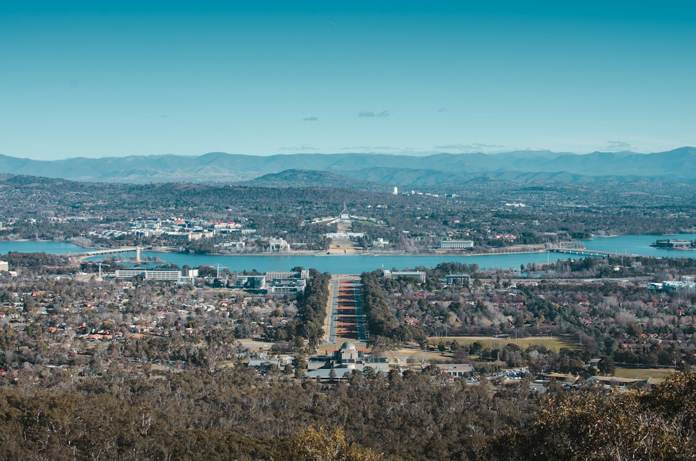

A useful Canberra retaining brief starts with 3 checks: what the wall must retain, where water can lawfully discharge, and what sits close to or above the wall. The source guide identifies 8 project routes, including sleeper, block, stone, boulder, gabion, drainage, engineered and repair pathways. A 1.2 metre wall is not automatically exempt, because location, easements, other structures and the actual design can change the approval question.
For homeowners comparing retaining walls canberra options, the practical starting point is not the wall face, but the site load, water path, access and ACT approval context.
Retaining Walls Canberra Explained
Retaining Walls Canberra frames the brief around three questions before choosing a wall face: what the wall must retain, where water can safely go, and what sits close to or above the wall. That order is useful because the visible surface may be the simplest part of the job.
A wall beside a driveway, fence, building, steep bank or second wall needs a different conversation from a low garden terrace. The enquiry should record approximate retained height and length, but it should also show nearby loads, access constraints and signs of water movement. Photos from both ends, taken only where safe, help a contractor understand lean, cracking, bulging, timber decay, post corrosion and water marks before discussing repair or replacement.
The source page lists concrete sleeper, timber sleeper, reinforced block, stone and boulder, gabion, drainage, engineered and repair routes. Treat those as starting points for scoping, not as a shopping list. The right system depends on load, drainage, foundations, access and approval inputs.
Drainage Decides More Than Appearance
The wall face is visible, but the drainage path does much of the work. The published guide notes aggregate, filter separation and a subsoil drain behind new or replacement walls, while also stating that those details only work when the site has a lawful, practical discharge route.
That makes water notes a quote essential. Before asking for a price, record what happens after rain, where water marks appear, whether the ground stays wet, and whether the wall has moved after changed landscaping or nearby work. A contractor can then discuss whether drainage assessment is part of the brief rather than treating it as an afterthought.
- Note visible water marks, staining or wet ground near the wall.
- Describe where runoff appears to enter and leave the area.
- Ask how aggregate, geotextile, subsoil drainage and discharge will be handled.
- Do not excavate beside an unstable wall to investigate it yourself.
Repair, Replacement Or Engineered Scope
A leaning wall may be showing only the final symptom. The source guide lists possible movement causes including water pressure, decayed timber, corroded posts, insufficient embedment, changed loads and ground movement. Those causes point to different next steps, so a repair conversation should avoid assuming the visible lean is the whole problem.
Replacement may be considered when the structure, material condition or drainage path cannot be sensibly corrected. Engineered and approval-ready work becomes relevant where the design is not exempt or where the wall has loads and site conditions that need coordinated design, certification or approval inputs. The useful question is what evidence the contractor needs before recommending one path.
A concise Canberra retaining wall planning note can sit beside the main brief when comparing how site dimensions, access and water symptoms are being described across similar project guides.
ACT Approval Questions To Ask Early
The source page separates building approval, development approval and stormwater easement questions. It also says the actual geometry decides which checks apply. That means height alone is an incomplete test, including for the common 1.2 metre question.
For Canberra projects, ask the contractor or designer which ACT checks are relevant before work starts. The money page refers to BA exemption conditions under Schedule 1, DA exemption thresholds for fill, cut-in and combination walls, boundary-related limits, and different ways height may be assessed. If a stormwater easement is involved, the page says a site plan and special engineering may be required so footings clear and do not load the stormwater asset.
Keep the approval discussion factual. Share the wall location, retained height, adjacent ground levels, boundary relationship, nearby structures and any known easement information. If those details are missing, the quote may need assumptions that later change the scope.
Who This Applies To
This guide is most useful for Canberra property owners who need a wall scoped around real site conditions rather than a generic finish. It suits garden terraces, boundary level changes, repair assessments, drainage concerns, and projects where access, nearby structures or approval questions may affect the work.
It is also relevant when comparing wall systems. Concrete sleepers may be discussed for durable garden, boundary and level-change work. Treated timber may suit lower garden terraces and straightforward landscape briefs. Reinforced block may suit engineered loads and crisp integrated structures. Stone, boulder and gabion options depend on mass, drainage, foundations, filter separation and access. The right conversation starts with site evidence, then moves to materials.
Before requesting a quote, prepare suburb or postcode, dimensions, access notes, drainage symptoms and photos. That gives the contractor enough context to discuss the next step without pretending every wall can be priced from a material name alone.
- Record the wall task. Write down what the wall must retain, approximate height and length, and what sits above or near it.
- Map the water path. Note rain behaviour, water marks, wet ground and any known discharge route before asking for a quote.
- Check approval triggers. Ask whether building approval, development approval or stormwater easement questions apply to the actual geometry.
- Send useful evidence. Provide suburb or postcode, access notes and photos from both ends where safe.
| Pathway | Useful when | Question to ask |
|---|---|---|
| Sleeper or block wall | A defined garden, boundary or level-change brief needs a structured system | What loads, footings, posts or reinforcement are assumed? |
| Stone, boulder or gabion wall | The landscape brief suits mass, texture, drainage and site access | How will foundations, filter separation and discharge be handled? |
| Repair or engineered pathway | There is lean, cracking, bulging, decay, corrosion, nearby load or approval uncertainty | What evidence is needed before repair, replacement or design advice? |
Common questions
Is wall height enough to decide ACT approval? No. The source guide says height alone is not enough because location, exemption conditions, easements and nearby structures can change the answer.
What details help a contractor assess a retaining wall? Useful details include suburb or postcode, dimensions, access constraints, photos, drainage symptoms and what sits close to or above the wall.
Can a leaning wall simply be repaired? Sometimes, but the source guide says movement can follow water pressure, decayed timber, corroded posts, insufficient embedment, changed loads or ground movement, so the cause should guide the pathway.
Should drainage be discussed before choosing materials? Yes. The guide treats drainage as part of the brief, including aggregate, filter separation, subsoil systems and a lawful practical discharge route.
This guide covers Canberra retaining wall scoping, drainage, repair signals, material pathways and approval questions using the supplied project guide.